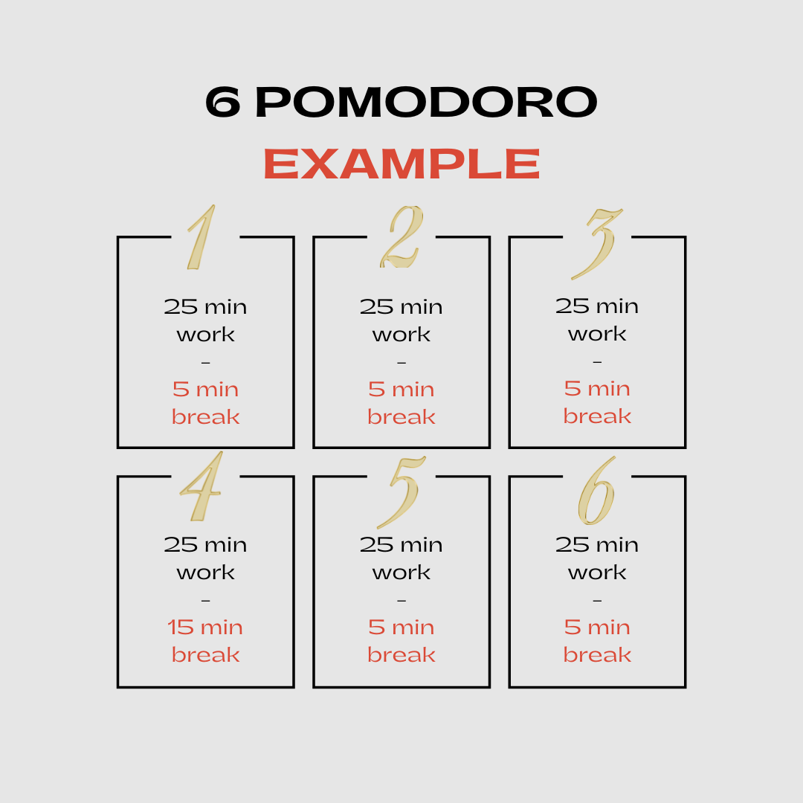

Pomodoro Technique
Time Based Study.Short, Timed Sessions to Boost Productivity.
What is pomodoro technique?
There is a word which means tomato in Italian and it is “pomodoro”. This funny word has secret study technique behind it which allows you to focus small topic on short period of time. Dozens of people tried this method and mostly works for them! This method is best for people who is struggling to focus and wants to improve productivity.
Basically there are 5 steps in pomodoro:
- Pick a task
- Set a 25 minute timer
- Work on your task until 25 min is up
- Give 5 minute break after 1 set of 25min.
- Repeat the process.
Dont forget to give 15-20 minute breaks for every 4 pomodoro. For instance, there will be this workflow for 6 pomodoro session:
Pros
- You can break down big projects to small parts and work on them.
- It makes easy to just start!
- You can gamify your productivity.
- You will be much aware where your time goes.
Cons
- If you need longer concentration , pomodoro is not for you
- Keeping 5 minute break is hard . It can be more break time easily.
To sum up
You can use this method if you have short time or focusing problems. You can follow template that we offer.
You can buy the template of this method from here